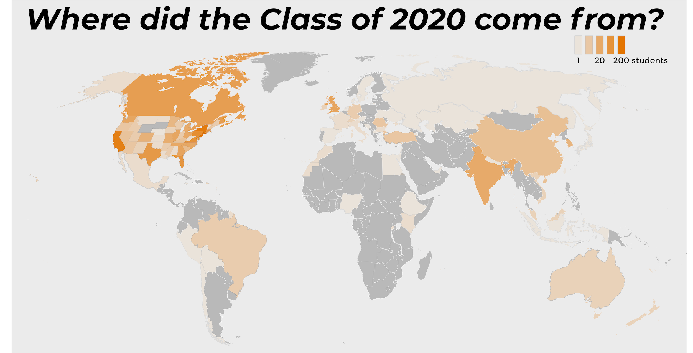
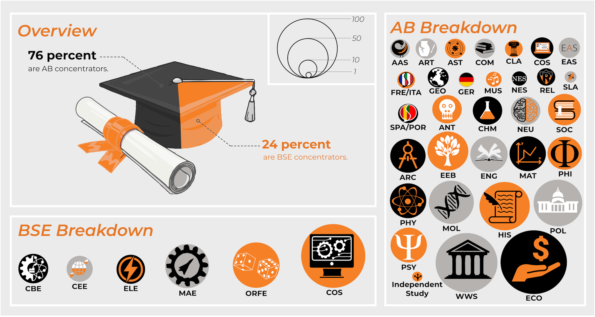
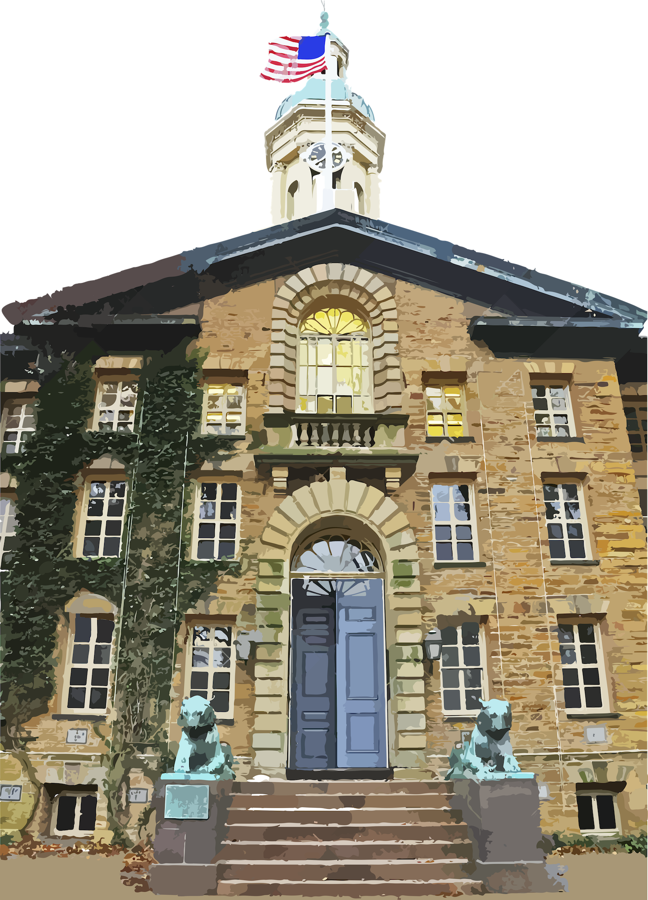
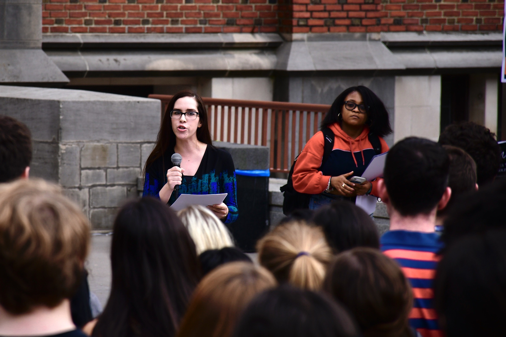

Seth Paternostro • Ilana Perkins • Serena Mon • Sean Gai • Jeremy Nelson • Sarah Coffey • Michael Peters • Maya Walton • Alden Hunt • Kennedy Leverett • Kasey Bersh • Jackson Artis • Andrei Graur • Aidan O'Donnell • Traci Mathieu • Michael Milam • Jackson Caputo • Jasper Jarecki • HJ Suh • Sadie Henderson • Annika Kruse • Timothy Tang • Jonathan Garaffa • Bruno Fernandes • Vayne Ong • Carrie Pritt • Mohamed Abdelhamid • Sarah Hirschfield • John Baek • Aria Wong • Catherine Benedict • Matthew Hallmark • Christopher Evanko • Taylor Jean-Jacques • Madeleine Sumner • Alexander Kirschenbauer • Fleming Peck • Ayo Foster-McCray • Laura Hausman • Marah Sakkal • Riley Chabot • Stephen Cornwell • Hayoung Park • Jonny Hopcroft • Elizabeth Wallace • Audrey Cheng • Christiana Esowhode • Gregory Luck • Jaspreet Kalsi • Andy Lin • Marcus Norkaitis • Agatha Okobi • Eliot Chen • Ariane Fong • Robert Hickson • Kate Andre • Karen Wu • Lucy Jing • Abbie Minard • Chris Lawrie • Michaela Nickerson • Ben Clarke • YJ Choi • Phoebe Ozuah • Ymhani Cloird • Robert Liu • Christian Novogratz • Janice Cheon • William Johnson • Emma Pannullo • Aniela Macek • Lauren Von Berg • Sarah Kamanzi • Karissa Lowe • Hadley Irwin • Russell Slighton • Nazenin Elci • Clare McKee • Juliana Jiranek • Neil Slighton • Philip Thompson • Hayley Siegel • Rachel Granovsky • Dylan Galt • Laura Pansini • Wesley Yuan • Andrew Redd • Talitha Wisner • Jean Somalwar • Alexa Adams • Calvin Rusley • Jack Tait • Elizabeth Schwartz • Thomas Hoopes • Joseph Daniels • Nathaniel Gadiano • Henry Ando • Andrew Brown • Olivia Foster • Samuel Barmann • Sarah Bowen • Hunter Campbell • Armaan Valvi • Christian Sullivan • Tiffany Chen • Benjamin Edwards • Conor Lundy • Katherine Wang • Derek Sawicki • Moses Im • Jamie Mercurio • Kateryn McReynolds • Reece Schachne • John Hallman • Samantha Einspahr • Milo Hughes • Jason Wee • Juliet McGowen • Jesse Thibodeau • Rachel Kasdin • Charlie Kwitchoff • John Willett • Michael Kamsky • Marisa De Silva • Liza Milov • Cole Diehl • Jacob Sweetow • Aditya Cowsik • JJ Kim • Dovid Braverman • Jackie Dong • Jordan Allen • Patricia Chen • Eric Rojas • George Huhmann • Chi Yu • Daniel Hampton • Olivia LeSueur • Sean Duncan • Emma Hopkins • Sophie Kader • Danny Pinto • Todd Gilman • Sierra Castaneda • Jose Morales • Laurie Zielinski • Roxana Biglari • Marshall Schaffer • Watson Weng • Natalie Grayson • Victor Zhang • Cecilia Rojas • Vidur Beharry • Freddy Marsh • Taylor Nolan • Joshua Latham • McKenna Brownell • Evan Elig • Kapil Chandran • Saahil Katyal • Natasha Thomas • Kuteara Jamison • Chung Kyong Nguen • Alina Kido-Matzner • Handa Chun • Jorina Kardhashi • Erin Gray • Jenny Xin • Payton Holden • Winfred Darko • Xerxes Libsch • Jon Spires • Keunho Kim • Andres Irribarra Ramirez • Max Parsons • Tomi Lawal • Michael Sowers • Joshua Gardner • Adhitya Raghavan • Wade O'Brien • Sneha Iyer • Niranjan Shankar • Justin Calimlim • Maddie Carroll • Nathaniel Lambert • Morgan Thompson • Spencer Sands • Jake Caddeau • Natalie Grossi • Uri Schwartz • Natalia Roszkowska • Mikaylah Ladue • Benjamin Issroff • Tony Chen • Jerry Xiang • Gemma Zhang • Kristie Falconer • Alexandra Colon • Bennett Weissenbach • Fatih Kaleoglu • Daniel Pallares Bello • Adam Teece • Katherine Hong • Jessica Edouard • Mofopefoluwa Olarinmoye • Christo Ritter • Andrew LeRoux • Brandon May • Bruce Allen • Andy Zheng • David Babikian • Zach Keller • An Lanh Le • Alex Ju • Vittorio Reynoso-Avila • Gary Hu • Lydia Zhong • Michelle Baird • Arul Gupta • Barbara Gruszka • Sofia Dimitriadoy • Ramzi Haddad • Hubert Kalinowski • Laetitia Fleur Derrough • Justin Hamilton • Brandon Mintzer • Henry Parkhurst • Alexandra Koskosidis • Will Brown • Chamari White-Mink • Ivy Xue • Grace Baylis • Justin Tran • Talia Anisfeld • Caroline Castleman • Alex Rogers • Allegra Martschenko • Yang Shao • Pulkit Singh • Jonah Ng • Kevin Lin • Andrew Spencer • Theodore Ando • Natalie McGowen • Jeremy Du • Michael Retoff • Matt Conklin • Shane Gooding • Sofie Kim • Hari Santhanam • Abraham Joshua • Heather Cho • Tristan LaCombe • Stephanie Neatby • Lorraine Cliff • Electra Frelinghuysen • Kaitlyn MacMillan • Jake Kirkham • Kierra Laube • Narek Galstyan • John Colangelo • Kevin Finch • Rachel Inman • Zarnab Virk • Alexander Paternostro • Jane Sul • Miles Lee • Jonah Hyman • Audrey Shih • Abaigeal Blake • Phillip Yoon • Ryan Quigley • Elizabeth Keim • Zoe Zeitler • Gabriel Vercelli • Jacob Brown • Brandon Ward • Christopher Sayan • Olivia Ott • Milan Eldridge • James Currah • Casimir Kothari • Julia Hillenbrand • Aleksandra Kostic • Tingting Sun • Jaclyn Hovsmith • Bri Yarnoff • Benjamin Rosenblatt • Sofie Gonzalez • Daehee Lee • Kevin Hou • Becca Senatore • Robbie Freeman • Jonathan Makepeace • Elisabeth Slighton • Gagandeep Kaur • Mick Sornwanee • Tabitha Belshee • Daniel Afrifa • Jon Kelly • Yun Woon Lao • Avital Fried • Roman Horoszewski • Vanessa Moore • Jason Bateman • Henry McGrath • Amanda Cooleen • Jenny Kim • Lucas Manning • Cathleen Kong • Jaylin Lugardo • Alvin Zhang • Dee-Dee Huang • Michael Lotito • Alexander Glickman • Karina Aguilar Guerrero • David Kim • Alexa Fishman • Cole Morokhovich • Malik Walker • Nebil Ibrahim • Kevin Zou • Steven Chien • Abby Breitfeld • John Bachek • Elizabeth Lilly • Emma Hergenrother • Ben Martin • Tait Helgaas • Adithya Dattatri • Aditya Kohli • Ben Yap • Maximilian Kim • Kendra Dombroski • Somi Jun • Camille Heubner • Olivia Johnston • Matteo Russo • Hansini Bhasker • Theodore Goldstein • Leland Ko • Jessi Dessau • Rebecca Ngu • Aditi Dhital • Celeste Claudio • Elliot Davies • Joel Ritossa • Morgan Nicolao • Samuel Li • Sam Cuthbert • Melissa Fan • William Steidl • Lencer Ogutu • Suzanne Lange • Laura Zecca • MacKenzie Ebel • Carlota Corbella • Sophia Taylor • Jordan Fogarty • Olivia Long • Tajreen Ahmed • Crystal Wu • David Zhou • Serena Alagappan • Destiny Eisenhour • Farrah Lee-Elabd • Jeffers Guthrie • Richard Huang • Christian Schmidt • Anthony Chen • Alexander Deters • Derek Topatigh • Dani Peters • Mason Cox • May Jiang • Jaein Jung • Kevin Wu • Abigail Denton • Michelle Yuen • Michael Rodriguez • Laura Kirkland • Jamie Denham • David Friedman • Amy Cass • Eric Zhao • Sharon Washio • Kezia Otinkorang • Bozhidar Stankovikj • Carter Mulroe • Chase Williams • Madison Eller • Joseph Gelb • Maddy Kushan • Yanjun Yang • David Todd • Cara Giovanetti • Sarah Betancourt • Jivahn Moradian • Chelsea Espinosa • Ayushi Sinha • Sarah Gordon • Haeun Jung • Ashley Willingham • David Major • Shiye Su • Danielle Almstead • Mashad Arora • Rayleen Hu • Annie Xie • Jiayu Kong • Mara Muslea • Abigail Kostolansky • Sylvie Thode • Leo Li • Tomi Kennedy • Bhaamati Borkhetaria • Katie Ward • Sera Gorucu • Alice Xue • Michael Chen • Ramzie Fathy • Ally Dalman • Zachary Stier • Kevin Davidson • Sophia Gulati • Claire Du • Alison Heilbronner • Gannon Willcutts • Eli Kimbell • Tyler Desire' • Nivida Thomas • Matthew Helm • Jeffrey Weiner • Daniel Arris • Ben Press • David San Miguel-Tasch • Daniel Leung • Ty Gardner • Adrienne Mandelbaum • Winston Lie • McGinnis Miller • Ayanna Matthews • Christine Lu • Akash Pattnaik • Riley Wagner • Alex Caldwell • Bill Dong • Conor Vance • Samantha Goerger • Meghan Slattery • Nankee Kumar • Olivia Zhang • Zachary Kelly • Ben Parker • Phillip Frost • Zachary Bampton • Maggie Orlova • Geoffrey Zheng • Lena Hu • Johnny Rose • Aoife Bennett • Marshall Saunders • Isabella Alarie • Ashley Dong • Sirad Hassan • Emily McDonnell • Leanna Nguyen • Shehab Thabet • Atarah McCoy • F. Gabriel Morgan • Katie Zhou • Olivia Sheppard • Sam Bartusek • Nikita Nangia • Kevin Liu • Ami Berman • Michael Stambler • Harry Xi • Jacob Williams • Matthew Hetrick • Destiny Salter • Taylor Baur • Kwame Amaning • Maia Hamin • Sophia Gavrilenko • Jonathan Alicea • Emily Spalding • Alexander Helman • Sonny Huang • Caleb Visser • Sebastian Quiroz • Joseph DeMarco • Ishan Sinha • Samantha Pai • Nitish Jindal • Emerson Thomas • Glenda Chen • McKayla Tyrrell • Nico Ciccia • Tiffany Chen • Rachel Kim • Audrey Davis • Alison Chang • Georgy Noarov • Chelsea Peart • Daniel Chae • Kevin Parker • Carrie Hillebrand • Yang Tu • Mayisha Mahdiya Sultana • Christopher Wilks • Taylor Branch • Thomas Ferrante • Nicholas Mehdi • Cam On • Ethan Sterenfeld • Shamailah Azam • Eitan Zlatin • Tessa Albertson • Hannah Semmelhack • Reilly Bova • Nicholas Johnson • Gabriel Stengel • Sandra Sequera • Chen Arden Xie • Leila Ben Halim • Benjamin Novello • Jonathan Lam • Dayna Taiclet • Austin Wang • Kyle MacMillan • Christopher Dragomir • Jack Draper • Mitashee Das • Nick Chen • Jessica Harris • Phillip Robertson • Giselle Uribe • Katherine Leung • Jacob Goldberg • Gabriela Oseguera Serra • Caroline Bailey • Mariah McVey • Milena Chakraverti-Wuerthwein • Arielle Lawson • Pria Louka • Kadence Mitchell • Benjamin Huang • Aaron Glas • Devorah Saffern • Molly Muir • Conway Niles • Anna Marsh • Baran Cimen • Tavish Rice • Nicholas Callegari • Daniel Koch • Madison Manning • Sam Choi • Yusha Sun • Niroshan Anandasivam • Hector Afonso Cruz • Devon Peterkin • Annique Nyman • Thomas Jankovic • Alice Wistar • Stuti Mishra • Malachi Byrd • Alexandra Wilson • Jessica Dyroff • Dennis Duffin • Obi Ajah • Yousef Elzalabany • David Garfunkel • Emma Louden • Madhumitha Shridharan • Osita Ighodaro • Andrew Charbonneau • Jocelyn Reckford • Bhadrajee Hewage • Jona Mojados • Juston Forte • McKalah Hudlin • Hadley Wilhoite • Jake Strain • Edwin Ordonez • Hanson Kang • Joseph Fallon • Haley Rogers • Bradley Spicher • Gabriel Birman • Rafi Lehmann • Eliza Ewing • Ishanya Anthapur • Jacob Schachner • Thomas Morris • Chelsie Alexandre • Emilie Szemraj • Alex Laurenzi • Laura Makin • Juliet Oh • Tatum Turetzky • Vinay Ramesh • Maia Hauschild • Carol Lee • Andrew Griffin • Curtis Leonard • Ananya Malhotra • Ozichi Okorom • Polly Hochman • Debby Cheng • Maddie Staczek • Chris Davis • Alexander Cavoli • Felicia Saravo • Ben Musoke-Lubega • Vienna Lunking • William Jiao • Jayson Saleet • Asia Matthews • Bobby Evans • Zachary Molino • Angelica Tai • Lucas Makinen • Leina Thurn • Samuel Fortuno • Carly Bullock • Joe Ratliffe • Alaa Ghoneim • Kenji Cataldo • Josue Chirinos • Miriam Li • Mahishan Gnanaseharan • Ethan Petno • Kade McCorvy • Joe McGrath • Seamus McDonough • Derek Cox • Madeleine St John • Nell McKenna • TJ Smith • Micaela Mongelli • Manuel Gomez Castano • Rebecca Barber • Kaveh Badrei • Mimi Lin • Lyric Perot • Preeti Iyer • Jane Blaugrund • Natalie Nagorski • Bryce Mbanefo • Nina Arcot • Morgan Baker • Kevin Tsai • Lucas Salvador • Shrishti Asthana • Viraj Deokar • Will Crawford • Kevin Jeon • Krista Hoffman • Davis Wachtell • Morlan Osgood • Julia Pak • Monica Gomez • Georgia Hellard Timm • Alex Mayo • Maya Naphade • Carter Green • Minsu Park • Juan Rodriguez • Jason King • Samuel Arnesen • Christopher Xi • Nicole Zivkovic • Toni Xu • Jacob Shteingart • Isaac Martinez • Ebun Olunuga • Leslie Chan • Russell Kim • Todd Baldwin • Alexander Essig • Jad Bechara • Albert Wang • Liam O'Connor • Abigail Rettew • Maria Stahl • Nicholas Judt • Beimnet Shitaye • Paulo Frazao • Daniel Braga • Avanti Divan • Jasper Arnold • Serge Priam Nsanzineza • Vince Schweinhart • Liana Cohen • Maximo De La Cruz • Yang Song • Maria Rogers • Menelik Graham • Alexander Gaura • Anne Zou • Madison Soukup • Elizabeth Wahlstedt • Rafael Tafur • Christopher Murphy • Bayo Okusanya • Trevor Carney • Jong Hyeon Kevin Shin • Iryna Glushchenko • Florence Odigie • Aizhan Akhmetzhanova • Jack Kilgallon • Daniel Tjondro • Jaafar Shanshal • Abelardo Cruz • Norman Xiong • Blake Alm • Yuhan Wen • Charity Young • Connor McCarthy • Joey Smith • Douglas Corzine • Yasmin AlKhowaiter • Ryan Gao • Soon Il Higashino • David Cordoba • Davey Roberts • Khyati Agrawal • Frederik Pedersen • Joshua Choi • Michele Montas • Benjamin Kimmel • Luke Henter • June Ho Park • Danielle Stephenson • Theodore Long • Jonathan Haynes • Elizabeth Love • Matthew Oakland • Owen Tedford • Devon Block-Funkhouser • Steven Nino • Micaela Keller • Greg McCord • Jack Graham • Kevin Tsao • Adam Azan • Benjamin Schiffer • Sally Hahn • Katie Reilly • Jean Cho • Arianah Hanke • Sandun Bambarandage • Marisela Neff • William Sweeny • Yolanda Jin • Katya Vera • Jianing Zhao • Insiya Essani • Neel Ajjarapu • Allie Spensley • Aleesha Ye • Oluwatoyin Edogun • Hyungjun Yoon • Mitch Bast • Max Piasevoli • Emily Hilliard • Casey Kemper • Gianna Garcia • Ryan McGregor • Grace Ackerman • Matthew Merrigan • Heather Waters • Maddie Bacskai • Theodor Marcu • Sarah Klebanov • Changxiao Xie • Camille Moeckel • Tali Pelts • Charles Hemler • Yunah Kim • Winnie Brandfield-Harvey • Emma Coley • Hana Mundiya • Zoheb Hossain • Tyler Campbell • Jordan Colvin • Abby Spare • Rose Gilbert • Emerson Solms • Pranav Rekapalli • Parker Lewis • Irene Ross • Eunice Lee • Rui De Oliveira • Thanh Nguyen • Colleen Heidorn • Eli Berman • Ashlyn Chin • Alexander Gottdiener • Jacob Wachspress • Jonathan Jow • Nicolas Ng • Michelle Rowicki • Anna Wolcke • Rosamond van Wingerden • Katherine Miao • Lauren Peterson • Nathan Poland • Vivian Ufongene • Teodor-Andrei Andronache • Ellen Scott-Young • Joshua Kim • Melissa Yuan • Courtney O'Brien • Brillian Bao • Cecilia Vergara • Akiva Jackson • Kennan Ewing • Alexander Xu • Seth Lovelace • Nick Bauer • Madeleine Dietrich • Shaelyn Choi • Kelcey Flowers • Megan Donahey • Arnold Mong • Jake Waksbaum • Jose Yanez • Daniel Stern • Jonathan Levine • Preeta Acharya • Manny Ramirez • Sarah Deneher • Nye Underwood • Sharon Xiang • Kalina Tsolova • Estibaliz Matulewicz • Andrew Wee • Rebecca Miller • Samuel Aftel • E Jeremijenko-Conley • Arya Goel • Philippa Marks • Julian Castellon • Sean McGowan • Ian Lawrie • Krystal Veras • Achie Gebre • John Nydam • Sidra Ahmad • Riley Heath • Daniel Same Guerra • Natasha MacManus • Reed Hutchinson • Grace Grady • Zoe Barnswell • Lauren Johnston • Jessica Fan • Peter Schmidt • Ben Liang • Ameen Moshirfar • Brent Holder • Chris Choo • Heavyn Jennings • Morgan Steelman • Ryan Hutzley • Shirley Zhang • Mensheng Romano • Harrison Ceruto • Leonard Merkin • Amy Li • Susan Powell • Charlotte Champ • Tajin Rogers • Sarah Malik • June Philippe • Jocelyn Wang • Nina Filippova • Dayna Valek • Jaskiran Kaur • Alexis Stokes • Annabel Lee • Eunice Kim • Satchel Joseph • Rawlison Zhang • Ofek Peres • Hannah Fein • Carson Brisk • Sharon Musa • Noah Ajram • Andre Mendoza • Divyanshu Pachisia • Stanislav Slavov • Matthew Igoe • Michael Li • Leora Eisenberg • Lyra Katzman • Carolyn Guan • Susan Orth • Coco Chou • Samer Kadamani • Madison Werthmann • Alexandra Levinger • Matthew Timo • Charlie Tomassetti • Deniz Keles • Chisom Chigozie-Nwosu • Serban Eugen Cicortas • Cutter Esson • William Grear • Alexandra Zalewski • Veronica Carrasco • Alexia Martinez • Allison Spann • Teddy Hurley • Linh Tran • Charmaine Chan • Wenjuan Du • Nicholas Sileo • Matteo DeVincenzo • Aslesha Parchure • Diana Sandoval Siman • Adam Beasley • Sarah Barnette • Mike Zupko • Eleanora Schaer • Raphael Sitbon-Taylor • Mark Kim • Simone Downs • Haneul Ryoo • Zachary Struckman • Brendan Galvin • Connor Matthews • Maria Clara Otani • Allison Harvey • Stephen Phillips • Miah Pitcher • Joe Zhang • Seyitcan Ucin • Udit Basu • Thomas Koenig • Raluca Cobzaru • Collins Metto • Jacob Berman • Franklin Maloney • Caitlin Cheng • Joe Tavoso • Christopher Howard • Oriel Farajun • Carl Sun • Sarah Jun • TJ Floyd • Richmond Aririguzoh • Khanh Vu • Manolo Torres-Llompart • Sam Dale • Rachel Edelson • Arthur Li • Dale Lee • Rucha Alur • Declan Farmer • Tess D'Orsi • Daniel Afolabi • Cole Campbell • Kobe Miller • Natalia Brokate • Alice Vinogradsky • Christie Chong • Kevin Wadman • Isabella Haegg • Mabel Felix • Jeremy Germain • Evan Majic • Heide Baron • Janet Lee • Serena Lu • Harry Fosbinder-Elkins • Jasmine Young • Austin Stiefelmaier • Mariesa Cay • Benjamin Hildenbrand • Seb Benzecry • Matthew Kolodzik • Anne Marie Wright • Katherine Powell • Radia Soulmani • Eduardo Paz • Owen Wheeler • Jenna Shaw • Rick Raga • Adrian Tong • Olenka Burghardt • Nicholas Apostolakis • Rasheeda Saka • Jeb Banavige • Bilal Mubarack • Jennie Yang • Paul Horvath • Maggie O'Connell • Markos Markakis • Tiffany Pham • Sylvia Wallin • Natasha Skov • Alyssa Cai • Gab Montefalcone • Tania Bore • Andrea Reino • Alexis Rysewyk • Rachel Silverman • Catherine Nguyen • Kelli Calhoun • Jacob Wheeler • Riley DeMoss • Soyeong Park • Dionne Chen • James Proctor • Hyojin Lee • Zoya Shoaib • Lillian Xu • Tom Colen • Nicholas Ioffreda • Sonia Murthy • Kathryn Wen • Trina Swanson • Tan Shanker • Gabriela Rivera • Philip Cornell • Daniel Lee • Elaine Zhou • Bojan Lazarevic • Catherine Sweeney • Hanley Frantz • Nathaniel Hickok • Yousra Zerouali Boukhal • David Selwood • Elizabeth Shwe • Sonya Isenberg • Janette Lu • Millian Gehrer • Parker Dixon • Jhor van der Horst • Irene Hsu • Katie Liu • Jingwen Guo • Jason Xu • Sydney Wilder • Lillian Meng • Sara Lewis • Erin Boateng • Michael Li • Conor Nolan • Caden McLaughlin • Bes Arnaout • Katherine Xiao • Victor Riveros • Janet Zhao • Abby Hack • Nicole Horner • Stephen Liu • Nicholas Persaud • Andrew Wu • Isaac Wolfe • Henry Evans • Eric Thoman • Sofia Bisogno • Tigar Cyr • Andrew Zeng • Shanon FitzGerald • William Lin • Sydney Reynolds • Alexander Bechtold • Alexander Cox • John Orr • Jeff Zymeri • Kristen Pagliai • Jan Domingo Alsina • Emily McLean • Megan Whitley • Katie Kuk • Kesin Ryan Dehejia • Harrison Aaron • Andrew Witmer • Andrew Gnazzo • Sunny Sandhu • Melita Piercy • Ralph Chrappa • Nourhan Ibrahim • Caton Yang • Audrey Spensley • Rose Arbittier • Billie Runions • Sam Johnson • Irma Qavolli • Carlotta von Gierke • Jared Shulkin • Hugo Myron • Eitan Levin • Eric Stinehart • Makel Caldwell • Andrew Bowman • Betsy Vasquez • Ellie Breitfeld • David Zuluaga • Grace Sommers • Nikolaus Hofer • Alistair MacDiarmid • Himaayah Agwedicham • Joaquim Brooks • Manasseh Matossian • Rohan Rao • Megan Ormsbee • David Bewicke-Copley • Kirsten Traudt • Katrin Lewis • Gabriella Pollner • Brittany Grego • Ruben Dicker • Matthew Fuller • Amelia Stucke • Nicholas Kick • Rohan Shah • Ikaia Chu • Lauren Ehehalt • Naomi Cohen-Shields • Jarret Stowe • Mona Clappier • Tom Salama • Kara Dowling • Jackson Neus • Jackson Cressey • Amy Castellano • Dominic Saunders • Matthew Yeh • Roman Ackley • Allice Park • Jessica Ho • Logan MacDonell • Sophia Paredes • Yashodhar Govil • Savannah McIntosh • Binita Gupta • Carolina Cantu • Pamela McGowen • Perrin Hagge • Rod Eric Joseph • Nazifa Chowdhury • Annette Chu • Richard Du • Katie Schneer • Kayla Janis Dobies • Barrett Gray • Andrew Damian • Stephanie Domaradsky • Arman Medghalchi • Ashley Salimbangon • Zhengyue Anna Dong • Michael Liapin • Jasmin Capellan • Cecilia Hsu • Aliya Somani • Clare Cook • Camille Liotine • Cooper Young • Samuel Prentice • Matthijs Dijkgraaf • Gabriel Swagel • Autumn Weyant • Esther Julis • Alice Xu • Grace Searle • Urvashi Uberoy • Alia Wood • Cody Sedillo • Jacob Williams • William Gladson • Nathan Levit • Taylor Mills • Matan Grinberg • Peyton Cunningham • Charlie Minns • Jessica Schreiber • Abby Givens • Christina de Soto • Nathalie Jimenez • Kasia Nixon • Sophie Steinman-Gordon • Drey Tengan • Genevieve Garlock • Meredith Hooper • Christian Araneo • Isabella Chung • Jessie Giller • Christopher Russo • Ananya Mittal • Malika Oak • Sean Howe • Amy Ahn • Daniel Che • Bisrat Moges • Roland Mounier • Sarah Schneider • Kevin Yu • Yunzi Shi • Claire Thompson • Lily Mannion • David Loughran • Danielle Hoffman • Megan Ostrowski • Kiley Coates • Sergio De Iudicibus • Hassaan Khan • Henry Peters • John Suh • Annie Cory • Josh Faires • Nicholas Ritter • Gregory DeMatteo • Tristan Pollner • Max Jerdee • Charlie Flynn • Michael Smilek • Joseph Collins • Liam Grande • Daniel Schwarzhoff • Richard Peng • Alice Lin • David Harding • Sanna Lee • Yafah Edelman • Shazia'Ayn Babul • Brandon Levy • Danielle Newton • Anvay Grover • Sara Howell • Tamupuwa Kamba • Harry Lord • Hannah Chomiczewski • Adam Chang • Diana Chen • Katherine Stiefel • Bora Kiyan • Kolby McDaniel • Apria Pinkett • Evan Quinn • Liam Kelly • Graham Adomitis • Anne Elizabeth Sidamon-Eristoff • Gabe Roth • Justice Dixon • Richard Furchtgott • Erin Endres • Couty Fall • Caroline Taber • Ryan Golant • Kathleen Farace • David Sturtz • Patrick Nian • Bhavani Srinivas • Shirley Klimkiewicz • Luqman Issah • Tim Ruszala • Michael Hill-Oliva • Molly Milligan • Nicholas Garvey • Alex Jiang • Jai Amin
On September 11, 2016, nearly all 1,312 members of the Class of 2020 streamed into the University Chapel for Opening Exercises. It was one of their first times together as a class.
Twenty years prior, Toni Morrison had found Princeton “redolent with the breath of the emotional life lived here and the intellectual life made manifest here.” Over their four years on campus, the students of the Class of 2020 would make good on both.
Those students, however, arrived at a university wrestling with its own past. The previous November, students from the Black Justice League had occupied the office of President Christopher L. Eisgruber ’83, in protest against the University’s celebration of white supremacist Woodrow Wilson Class of 1879.
Commemorate Commencement
preorder our special print issue
By pre-ordering, you will be the first to hear when the issue is available, but you will not be obligated to purchase one at that point. We will not use your email address for any other purpose than to let you know when the Commencement Issue is available!
On that September afternoon, as the Class of 2020 sat awe-struck beneath granite pillars and stained glass, acrimony and prejudice surged across the world. As Eisgruber reflected, “This September follows a searing summer, a summer filled with loss and grief and violence around our planet and in this country.”
Fifty-eight days later, Donald Trump would win the presidency of the United States. Just as Princeton was grappling with its historical contradictions, so too was the nation.
Today, historic achievements distinguish the Class of 2020, which includes musicians and athletes, mathematicians and anthropologists, artists and engineers. On Sunday, Nicholas Johnson, the first Black valedictorian in Princeton’s 274-year history, will address his peers.
As the Class of 2020 celebrates all it has achieved, campus will be empty. But the work of making Princeton a better place continues. To that centuries-long conversation, the Class of 2020 has submitted its own indelible contribution.
This, then, is the story of a remarkable Class and its students — the triumphs they earned and the travails they endured, the heights they scaled and the legacies they leave behind.
This Year's Class
The Class of 2020 comprises a diverse and vibrant array of students, whose unique backgrounds and experiences inform the Class’ collective perspective.
In 2015, 29,303 students applied to Princeton, in what was then the largest applicant pool in the University’s history. The following fall, 1,312 matriculated as members of the Class of 2020.
Of those students, 20 percent identified as Asian, 9 percent as Hispanic, 8 percent as African American, and less than 1 percent as American Indian.
In total, 153 students, or 12 percent of the Class, hailed from 49 countries beyond the United States. Stateside, 200 students came from New Jersey, 156 from New York, and 129 from California.

Mark Dodici / The Daily Princetonian
During their time at Princeton, members of the Class studied a striking range of subjects, from philosophy to chemical engineering, from geosciences to African American studies. On Sunday, approximately 76 percent of the Class will receive Bachelor of the Arts (AB) degrees, while the other quarter will receive Bachelors of Science in Engineering (BSE).

Harsimran Makkad / The Daily Princetonian
In the classroom, on the field, and on the stage, graduating seniors have earned countless honors, as they’ve sought academic challenge, won championships, and captivated audiences.
Under the Class of 2020’s leadership, Princeton became the first Ivy League school to secure 500 Ivy League Championships.
In this special retrospective, we chronicle how the Class of 2020 got here.
Looking back at the last four years

Nassau Hall. Harsimran Makkad / The Daily Princetonian
YEAR 1
As Princeton adopted a new motto, students advocated for undocumented immigrants and protested the election of Donald Trump. Myesha Jemison ’18 made history as the first Black woman elected Undergraduate Student Government president, and Bella Alarie ’20 played on the USA Basketball Women’s Under-19 World Cup Team.
Three years ago, then-sophomore Emily Erdos ’19 called for Princeton to offer a journalism certificate. Just over a year later, the faculty unanimously approved just such a program.
By Christiana Augustine and Russel Weiss-Irwin April 26, 2017
“When a snowstorm hit this past winter, essential campus dining staff…were offered the opportunity to come to campus the night before. That was good, but the conditions workers found when we arrived were not.”
Along with other acts of civil disobedience, the Black Justice League (BJL) in November 2015 occupied President Eisgruber's office to force the administration to consider demands intended to make Princeton more hospitable to Black students. Their displays of resistance would reverberate throughout the Class of 2020's time at Princeton.
An Iranian court convicted Xiyue Wang, a History graduate student, on espionage charges, sentencing him to 10 years in prison. Over the next four years, his case would spark widespread outrage, as an international coalition worked towards his eventual release.
YEAR 2
With Honor Code referenda, a newly-resumed transfer program, and faculty approval of a new calendar, reform swept campus as the Class of 2020 finished its second year. Institutional reckoning and classroom controversy only added to the debate. In sports, field hockey reached the NCAA quarterfinals.
The University's joint complaint was one of the first to challenge the Trump administration's decision to terminate The Deferred Action for Childhood Arrivals program (DACA). Three years later, the Supreme Court would hear oral arguments on cases challenging this termination, including the complaint filed during the Class of 2020's first year on campus.
In 2018, the Tigers won by 29 points in the Ivy League Tournament Final, avenging last year's lost to Penn in the same game and punching their ticket to the 2018 NCAA Tournament.
That same year, the women's field hockey team swept the Ivy League and advanced to the quarterfinals in the NCAA tournament.
Several hundred demonstrators gathered in front of Frist Campus Center to protest for increased gun control after the Stoneman Douglas High School shooting in Parkland, Fla., which killed 17 people.
On March 26, the Honor System Review Committee discussed its preliminary findings regarding the three suspended referenda — which passed with overwhelming support from the student body.
Four decades of campaigning by Asian-American students, alumni, faculty, and staff culminated in the University’s creation of an Asian American Studies certificate.
“Despite progress for women on campus, the University has a long way to go in addressing sexual misconduct, combating misogyny on male sports teams, and rectifying the lack of female mentors.”
YEAR 3
As students and faculty considered curricular equity and the wrestling team made history, Maria Ressa ’86 endured political repression in the Philippines. The year culminated in student protests to reform Princeton’s Title IX office.
News outlets across the country covered Noa Wollstein's column criticizing the Tigertones' performance of the song, which contravened the boundaries of consent. In response, the Tigertones removed the song from their repertoire.
The ‘Prince’ commemorated the 50th anniversary of the student occupation of New South, in protest of the University’s investments in apartheid South Africa, for the special issue “Power of a United People.”
This demonstration was part of the "Ban the Box" movement, which aims to remove the conviction question on applications for undergraduate admission to the University.

Approximately 100 students participated in the walk out and teach-in. Jon Ort / The Daily Princetonian
The historic conference, entitled “Thrive: Empowering and Celebrating Princeton’s Black Alumni,” featured alumni presentations, discussions, and social programming. It was the fourth conference of its kind.
The November 2017 complaint, which was one of the first challenges to the government’s decision to end DACA, alleged that the program’s termination violated both the United States Constitution and federal law. The University filed the suit jointly with Microsoft President and University trustee Brad Smith ’81 and DACA recipient María Perales Sánchez ’18.
By Linh Nguyen , Zachary Shevin and Rooya Rahin December 7, 2019
Over three years after his original arrest in 2016, University graduate student Xiyue Wang returned to Princeton, N.J. During the previous three years, the Free Xiyue Wang Working Group arose among graduate students, holding vigils in his honor and fighting for his release.
Over three years after his arrest in 2016, University graduate student Xiyue Wang returned to Princeton, N.J. During the previous three years, graduate students formed the Free Xiyue Wang Working Group, which held campus vigils in his honor and fought for his release.
“I understand that people’s entire lives have been upended because so has mine. But that in no way justifies the mindless anger and insults which dehumanize innocent Chinese civilians, who themselves have suffered tremendously.”
By Jon Ort , Ivy Truong and Mark Dodici April 1, 2020
The ‘Prince’ invited students from the Class of 2020 to participate in a photo essay that aimed to create alternative thesis photos — in honor of all the seniors who will not be able to celebrate the capstone of their Princeton careers on campus.
For the Class of 2020, this weekend should have been the bittersweet culmination to four years on campus. Yet, ten weeks ago, COVID-19 forced the Class to bid Princeton an abrupt and unwelcome farewell.
As the coronavirus overtook the world, seniors navigated the most formidable challenges they had ever faced — not least, finishing their theses and capstone projects amid a pandemic.
In the same 1996 speech in which she celebrated the “breath” of Princeton’s emotional and intellectual lives, Morrison pondered the institution’s future. She asked, “Will instruction be executed solely in solitude by the isolated handling of sophisticated new machines?”
Today, Morrison’s question resonates with stunning prescience — especially considering that Eisgruber cited those very words nine months ago, as the Class of 2023 sat in the Chapel for its own Opening Exercises. Though unthinkable then, the pandemic now leaves us no choice but to learn “solely in solitude.”
At this critical moment, the Class of 2020 is poised to fulfill the motto unveiled in its first year: to live “in the nation’s service and the service of humanity.”
Tomorrow, an incredible community of leaders, advocates, scholars, and visionaries will become Princeton alumni. A world in need of remaking awaits them.